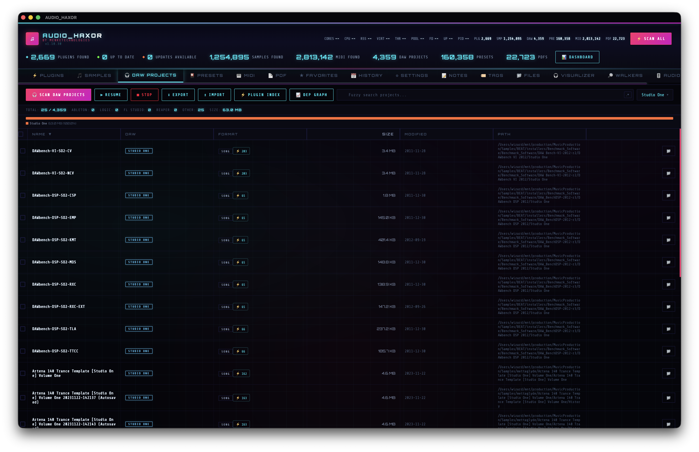

07.DAW projects tab
Thirteen DAW formats, per-format plugin extraction, two-way xref between projects and plugins, and the caches that make the dependency graph tick.

Supported DAW formats
From src-tauri/src/daw_scanner.rs. All of these are walked by scan_daw_projects (and by extension scan_unified):
- Ableton Live —
.als(gzip-compressed XML) - Logic Pro —
.logicx(macOS bundle with plist/binary innards) - FL Studio —
.flp(custom binary) - Cubase —
.cpr(binary) - Nuendo —
.npr(binary) - Bitwig Studio —
.bwproject(ZIP of XML) - REAPER —
.rpp+.rpp-bak(plaintext) - Pro Tools —
.ptx(v10+) and.ptf(validated by magic bytes) - Studio One —
.song(XML) - Reason —
.reason - Audacity —
.aup/.aup3 - GarageBand —
.band(validated by presence ofprojectDataplist inside) - Ardour —
.ardour - DAWproject —
.dawproject(open XML standard)
Table columns
From initDawTable() in frontend/js/daw.js (~line 232):
- Checkbox — batch select.
- Name — sortable (
data-key="name"). - DAW — colored badge ("Ableton Live", "Logic Pro", "FL Studio", etc.).
- Format — extension chip, with an xref badge button on supported formats that opens the plugin extraction modal.
- Size.
- Modified.
- Path.
- Actions — reveal in Finder, open project in its native DAW.
Filters & header stats
The header carries a search input (fuzzy or regex via toggle) and a multi-select DAW filter (dawFilter) covering every supported DAW plus Other. Stats row (updateDawStats(), ~line 117):
- Total count (or X / Y when filtered).
- Per-DAW counts: Ableton, Logic, FL Studio, REAPER, Other.
- Total size on disk.
Extract plugins — the xref modal
Click the xref badge on any supported-format row to open showProjectPlugins(path, name) in frontend/js/xref.js. The flow:
- Show loading modal.
- Call
extract_project_plugins({ filePath }). - Cache the result under
_xrefCache[projectPath]. - Render the plugin list: name, type, manufacturer.
- Export button — dumps the result as JSON via
exportXrefPlugins().
The cache lives in xref-cache.json inside the app data dir; a prefs fallback keeps it portable when the file hasn't been written yet.
Per-format extraction — src-tauri/src/xref.rs
Each format has a tailored parser:
- Ableton (.als) — gzip-decompress the file, run regex over the XML:
<VstPluginInfo>blocks →<PlugName>+<Manufacturer>,<Vst3PluginInfo>→<Name>+<DeviceCreator>,<AuPluginInfo>→<Name>+<Manufacturer>. - REAPER (.rpp) — plaintext, regex for
<VST "TYPE: Name (Manufacturer)". Types: VST, VST3, AU, CLAP. - Bitwig (.bwproject) — unzip, parse the XML project.
- Studio One (.song) — regex over the XML for
plugName="..."+deviceName="...". - DAWproject — follow the open XML schema.
- FL Studio / Logic / Cubase / Nuendo / Pro Tools / Reason — format-specific binary parsers.
Plugin names are normalized before caching: architecture suffixes (x64, x86, ARM64, 64-bit, 32-bit) are stripped, whitespace is collapsed, and the result is lowercased. This is how "Serum (x64)" and "Serum" end up pointing at the same node in the dependency graph.
Build the full xref index
One-off extraction is fine for a single project, but the dependency graph needs every project indexed. Run Build Plugin Index (Cmd+Shift+X, or the Build plugin index palette row). The pass:
- Fetches every DAW project with a supported format.
- Loops through them, calling
extract_project_pluginsper project. - Writes incremental results to
_xrefCache. - Surfaces toast progress every 25%.
Reverse xref — from plugin to projects
On a plugin row in the Plugins tab (step 04), the context menu offers Projects using this plugin. xref.js searches _xrefCache for entries whose normalized plugin names match the current plugin and shows a modal with the matching project list. Clicking a project in that modal reveals or opens it.
Open, reveal, history
- Open project →
open_daw_project({ filePath })launches the project in its native DAW via OS-level open. - Reveal folder →
open_daw_folder. - History →
daw_history_*commands: save, get scans, get detail, delete, clear, latest, diff. Compare two scans to see what DAW projects were added, removed, or renamed between runs.
Import / export
- Export JSON —
export_daw_json. - Export DSV —
export_daw_dsv. - Import JSON —
import_daw_json. - Export xref — entire cache to JSON via
Cmd+Shift+J.